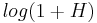
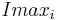
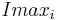
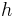

Interactive Watershed
Contents
| Interactive H_Watershed (ImageJ/Fiji) | |
|---|---|
| Author | Benoit Lombardot |
| Maintainer | Benoit Lombardot |
| File | SCF-MPI-CBG update site |
| Source | on GitHub |
| Initial release | 08 May 2017 |
| Category | Plugins, Segmentation |

Introduction
Watershed [Vincent 1991] is a common tool to segment objects in an 2D and 3D images. It is relatively fast and can provides understandable and robust results which can be used for image analysis.
Creating a good segmentation however requires some expertise and can be time consuming. One has to determine the right threshold to stop the watershed. Meaningful local extrema have to be selected to initiate the algorithm. And once a result is obtained the segmentation has to be compared to the original data. That process can then be iterated till satisfying parameters are found. That procedure can be very time consuming if not provided with practicle tools, especially when image are large and a single watershed can take minutes.
The interactive Watershed plugin provides an interactive way to explore local minima (maxima) and threshold, updating the resulting watershed on the fly. This is possible by calculating the watershed only once at plugin initialization. Further when Threshold or maxima selection are updated this initial segmentation is reused to generate the new segmentation instantly. In order to ease quality assessment the results directly overlaid to the data.
The 2 following subsection gives additionnal details on watershed working principle and on the strategy used in the plugin for local maxima detection: H-Maxima
Watershed principle
If we interpret images as landscapes of hills and valleys, the watershed algorithm gradually flood the valleys starting from their lowest point (the image local minima). When the floodings of two minima meet at a sadle they remain distinct as each minima region is labelled with a distinct color. The flooding stops when all the image is covered. As objects do not always cover the whole image a threshold can be set to stop region the region flooding. Alternatively the flooding can be started from local maxima. Figure 2 shows the flooding of 3 peaks for different values of the treshold parameter.

H-Maxima and H-Watershed
An image local maximum (minimum) is a region in the image for which all neighboring pixels have a lower (higher) value. A lot of maxima in an image are simply caused by noise and are not meaningful. If one can select more significant maxima corresponding to objects, they could be used to initiate a watershed segmentation of these objects.
There exists many different ways of detecting local maxima. H-maxima focuses on maxima robustness. It has one parameter, H, that can be compared to the amplitude of the noise in the image. H-maxima selects all maxima which are still maxima when their value is decreased by H. When H is increased, less maxima are selected but they end being more robust to noise. Figure 3 shows the maxima selected in a sample image for different H values.
We call H-Watershed the segmentation obtained by flooding the H-maxima of an image. Such segmentation has 2 parameters. The Threshold, T, that stops the flooding of the image and the H-maxima robustness, H, that defines the flooding initialization.

Usage
Installation
To install the plugin in your ImageJ or Fiji installation. Add the update site SCF-MPI-CBG. Java8 update site should also be installed if it is not there yet. The procedure to follow an update site can be found there.
Once the update site is installed, restart ImageJ. A new menu, SCF, should appear. The Interactive Watershed plugin can be found in the menu SCF>Labelling>Interactive H_Watershed.
User Interface
To use the Interactive Watershed plugin.
- Open an image to analyze. If the image has multiple channels or time points crop out a single channel/time point. the plugin focus on analyzing 2D and 3D images.
- In the menu SCF>Labelling click the item Interactive H_Watershed. The plugin will be initialized with the image that is in focus. A full watershed of the image is then performed. If the image is large a process dialog will pop up indicating the remaining time. If necessary the process can be interrupted. In such case you can crop a smaller volume and restart.
- 2 windows will popup after the initialization: the watershed image and the control panel. When the control panel modified the watershed image is instantly updated. When satisfied with the segmentation press the export button to create a label map image.
The control panel items, see Figure 4, can be used to modify the segmentation and its visualization. Their usage are described in the rest of the section:
- Analyzed image: This is the name of the analyzed image. It is there for the user information
- Segmentation parameters:
- Seed dynamics: The slider allows to adjust the H-maxima selection. Increasing that value will merge regions, while decreasing it will split regions. Note that the value shown at the end of the line is not the actual but . The reason is that logarithm scale provides a more intuitive interaction (many merging happen at low but much fewer at large .
- Intensity threshold: The slider allows to select the watershed stopping criteria,
 . Increasing decreases regions size while decreasing till they eventually disappear. Note that the value shown at the end of the line is not the actual but . Logarithmic scale provides a more intuitive interaction as regions usually evolve fast for low but much slower for larger .
. Increasing decreases regions size while decreasing till they eventually disappear. Note that the value shown at the end of the line is not the actual but . Logarithmic scale provides a more intuitive interaction as regions usually evolve fast for low but much slower for larger . - Peak flooding: this parameter is an alternative way to explore regions thresholds. Rather than using a global threshold one can apply distinct thresholds to each segment. Peak flooding allows to flood each peak till a certain percentage of its height. For the region
 the threshold
the threshold  , where is the threshold parameter, is the peak flooding in percent and  is the maximum intensity in region .
, where is the threshold parameter, is the peak flooding in percent and  is the maximum intensity in region . - Allow Splitting: if checked, playing with threshold or peak flooding might create new region by splitting existing one. If allow splitting is not checked the no new region is created, only the peak with the highest maxima is kept.
- Display Parameters:
- Display style decides how the current segmentation is displayed. The different modes are illustrated in Figure 5.
- Image will show directly the label map of the segmentation. This mode is convenient to adjust the segmentation display control and look up table with imageJ usual tools.
- Contour overlay mode overlays regions contours to a background image (by default the analyzed image). This mode is very convenient to check that the regions shape match object shape in the raw data.
- Solid overlay mode overlays solid segment to the background image.
- Slicing axis: If the analyzed image is 3D the user can select the orientation of the result visualization. Selecting X will slice the data in the plane perpendicular to the X axis (the plane YZ). As the resolution of microscopy data is often lower in the Z dimension and might be the bottleneck for segmentation quality it is important to check segmentation quality in plane XZ and YZ. The choice of slicing axis is illustrated in figure 6. By default the result window show XY planes. Navigation through the planes is done with usual ImageJ controls (image slider, mouse wheel, arrows).
- View Image selects the background image (i.e. shown below the segmentation overlay). By default, it is the image that was segmented, but can also be set to any other image with the same dimension. Note that images can't be added to the list after plugin initialization. This feature is practical to compare region shape to the original data. For instance, if the segmentation was done on a filtered image that could have alter object shape (see figure 7).
- Display style decides how the current segmentation is displayed. The different modes are illustrated in Figure 5.
- Export regions mask: if checked the export button will export a binary image rather than a label image. if the image is 2D this binary image is compatible with the particle analyzer from ImageJ.
- Export: Once satisfied with the segmentation visible on screen the corresponding label map can be exported to an ImagePlus that can be further analyzed with ImageJ. The export action appear in the macro recorder for Image Macro Language and Jython language.


Scripting
In ImageJ macro language one can perform a H-Watershed segmentation with the following command:
hMin = 20;
thresh = 100;
peakFlooding = 90;
run("H_Watershed", "impin=["+getTitle()+"] hmin="+hMin+" thresh="+thresh+" peakflooding="+peakFlooding + " outputmask=true allowsplitting=false");
In a Jython script the H-Watershed segmentation could be called as follows:
# @ImagePlus imp
# @OpService ops
# @UIService ui
# The parameters "Seed Dynamics", "Intensity threshold" and "peak flooding" can be made optional
# function Signature
# resultImage = op.run("H_Watershed", inputImage, hMin, threshold, peakFlooding, outputMask, allowSplitting)
# all parameters beyond inputImage are optionnal mean they can be replaced by null or if at the end of the
# list they can be remove completely. if the parameter is detected as missing a sensible default is used
# hMin = 5(max-min)/100
# threshold = min
# peakflooding = 100
# outputMask = false (default is to output a label image)
# allowsplitting = true (default is to allow threshold to create new peaks)
hMin = 0
thresh = 100
peakFlooding = 50
result0 = ops.run("H_Watershed", imp)
result1 = ops.run("H_Watershed", imp, hMin)
result2 = ops.run("H_Watershed", imp, hMin, thresh)
outputMask = True
allowSplit = False
result3 = ops.run("H_Watershed", imp, hMin, thresh, peakFlooding, outputMask, allowSplit )
ui.show(result0)
ui.show(result1)
ui.show(result2)
ui.show(result3)
The run commands are also recorded by the macro recorder when exporting a label map.
Methods and Implementation
The plugin strategy is to do the heavy lifting once at the beginning and rely on it later on to keep segmentation update lightweight.
Heavy lifting
At initialization the plugin calculates the full watershed of the image (i.e. for all local maxima of the image). This initial segmentation is then organized in a bottom up fashion. The segments are gradually merged to form a hierarchy (or a tree if you prefer). First the segment whose maxima have the lowest dynamics (or lowest robustness, remember H-maxima) are merged. When 2 segments are merged their dynamics and the dynamics of the neighbor segments are reevaluated. This merging process is repeated until all the segments are merged. It generates a tree whose nodes corresponds to segments in the image. In particular, when going along a tree branch, from leafs to root, the dynamics of the nodes is always increasing.
As a result of this process we obtain a label map of the full watershed and a tree representing the merging of the regions in that label map.
Ligthweight update of the segmentation
When the H parameter is updated to a value . It means that the watershed should show only the segments which local maxima have a dynamics superior to . If we prune our full tree to remove all nodes with dynamics inferior to the leaf of the pruned tree correspond to the segments we are looking for. We now need to recolor the label map of the full watershed to create a label map of the segmentation with -maxima. This can be done by attributing a label to the leaf node of the pruned tree. This label is then propagated to the leaf nodes of the original tree. Finally, the segment of the full watershed can be recolored according to this new label. This whole process is quite efficient: the relabelling is a simple raster pass on the orignal label map and the tree number of nodes is a lot smaller than the number of pixel in the image.
When the T parameter is updated the maxima are not modified, thus it is only needed to go through the label map and check if the pixel value in the raw data is above or bellow the threshold. When the peak flooding parameter is changed the strategy is similar but each segment as a distinct threshold
Comment on implementation
The initial description, to the best of our knowledge of a watershed segment hierarchy using peak dynamics as a merging criteria was described in [Najman 1996]. The plugin initial watersheding is implemented after the IFT-watershed [Lotufo 2000]. The implementation was modified to build the segment tree on the fly. The plugin input and output are IJ1 imagePlus however the image processing inside the plugin relies on ImgLib2. A quick note on the segmentation update of 3D image, the plugin does not relabel the whole volume at every update but only the slice vizualized in order to preserve interactivity.
References
[Vincent 1991] Vincent, L., & Soille, P. (1991). Watersheds in digital spaces: an efficient algorithm based on immersion simulations. IEEE transactions on pattern analysis and machine intelligence, 13(6), 583-598.
[Najman 1996] Najman, L., & Schmitt, M. (1996). Geodesic saliency of watershed contours and hierarchical segmentation. IEEE Transactions on pattern analysis and machine intelligence, 18(12), 1163-1173.
[Lotufo 2000] Lotufo, R., & Falcao, A. (2000). The Ordered Queue And The Optimality Of The Watershed Approaches. In In Mathematical Morphology and its Applications to Image and Signal Processing.
History
History of version available of SCF_MPI_CBG update site
- 2017-05-11: version 1.0.0
- inital release
- 2017-06-12: version 1.0.1 ,
- features: smoother slider for threshold and seeds
- bugFix: correct initialisation of the segmentation in the script call (this correction suppress discrepency between the GUI and the script call)
- 2017-07-03: version 1.0.2
- feature: the labelling is always continuous from 1 to number of labels in the image/volume
- feature: threshold and seeds dynmics slider range fix to [0,1000] with step of 1
- bugFix: the exported label map shows the correct number of labels in its title
- bugfix: threshold value in in output title corrected
- 2017-08-16: version 1.0.4
- feature: in scripting the parameter are optionnal (defaults, thresh = min , seed dynamics = 0.05*(Max-Min) , peakFlooding = 100). See jython script on the project repository for usage details.
- bugfix: the output image is not a virtual stack anymore. That was annoying for further analysis of the regions.
- bugfix: The output image now the same calibration as the input
- 2017-08-17: version 1.0.5
- bugfix: correct a regression with the macro recording.
- 2017-09-21: version 1.1.0
- Add the possibility to export a mask that can be directly analyzed with the particle analyzer. the run(...) or IJ.run(...) were updated to reflect the additional parameter
- 2018-01-10: version 1.2.1
- this version corrects a long standing bug such that object could be splitter by changing threshold while the 2 new region kept the same labeling. now the new regions are either relabeled either only the highest remaining region is kept. the choice is made depending on allow splitting parameter.
- the exported image is not a virtual stack anymore avoiding issue with further processing
- the exported image name is also updated the reflect more faithfully the name of the input image
- the threshold and seed slider are now linear: as a result the value displayed in the user interface is directly related to image intensity. which make parameter reading easier.